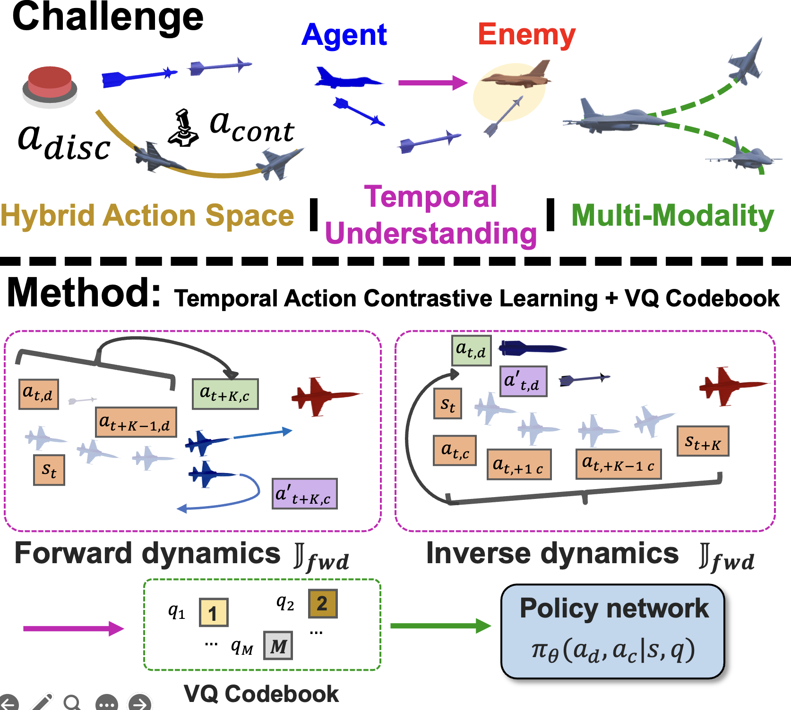
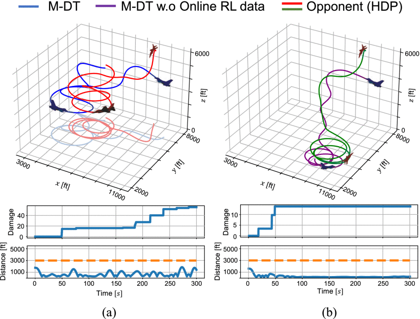
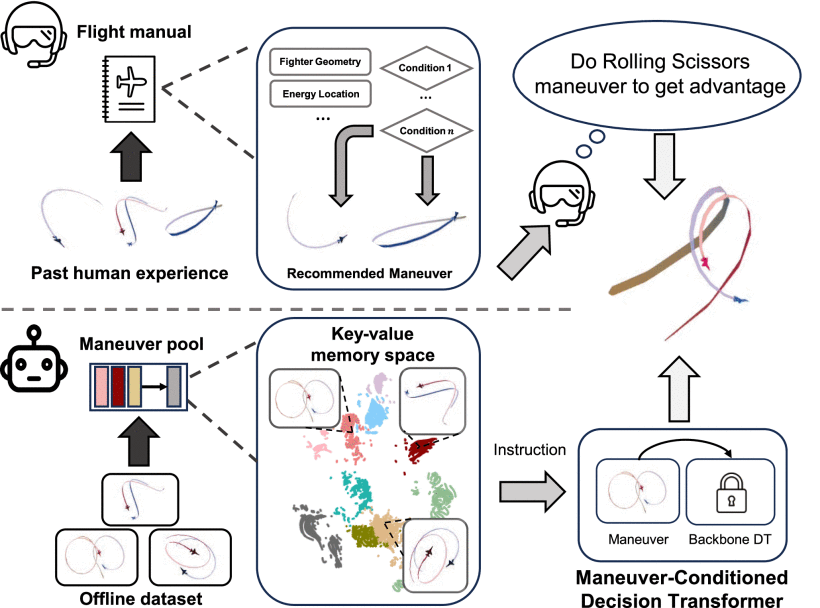
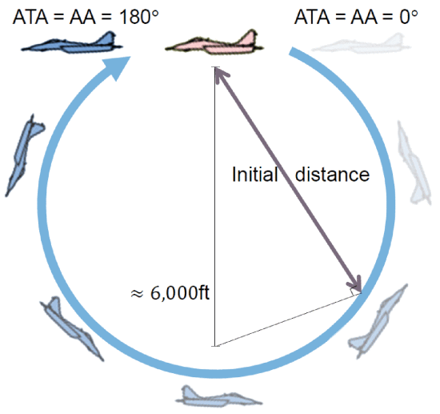
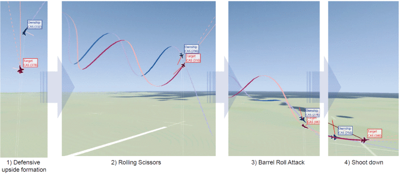
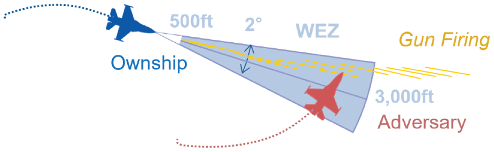
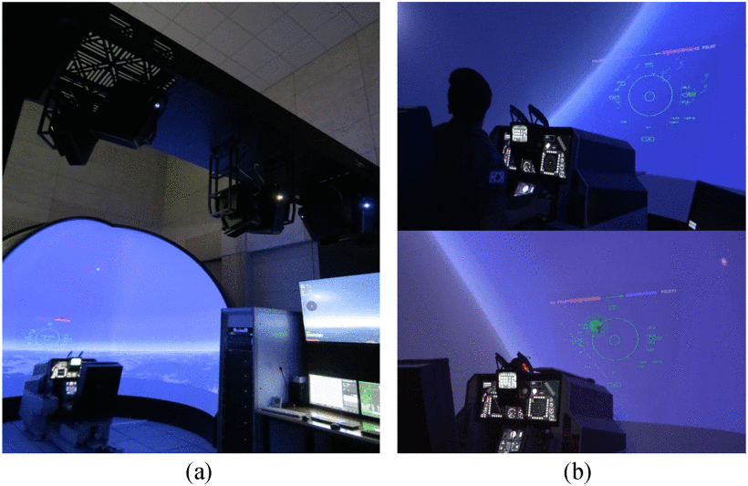

My research focuses on cooperative intelligence within multi-agent embodied systems.
Before joining LARR, I was a research officer at the Defense AI Center of the Agency for Defense Development (ADD).
I completed my bachelor's degree in Electrical and Computer Engineering at the Seoul National University.
I hope my research leads to assistant robots that bring care and support to children and people with disabilities.
[Jun 2025] Presented our work at the RSS 2025 workshop on Leveraging Implicit Methods for Aerial Autonomy, in LA.
[Oct 2024] Presented our RA-L paper and late breaking results at IROS 2024, held in Abu Dhabi.
Research

Temporal Action Representation Learning for Tactical Resource Control and Subsequent Maneuver Generation Hoseong Jung,
Sungil Son,
Daesol Cho,
Jonghae Park,
Changhyun Choi,
H. Jin Kim
IEEE International Conference on Robotics and Automation (ICRA), 2026
RSS workshop on Leveraging Implicit Methods for Aerial Autonomy, 2025
In this paper, we introduce a temporal action contrastive learning approach that facilitates semantic alignment between resource control and tactical maneuvers.


Maneuver-Conditioned Decision Transformer for Tactical in-Flight Decision-Making Hoseong Jung,
Yong-Duk Kim,
Youngjung Kim
IEEE Robotics and Automation Letters, 2024
paper
In this paper, we explore the offline reinforcement learning framework for tactical air combat.


Deep Reinforcement Learning-Based Air-to-Air Combat Maneuver Generation in a Realistic Environment
Jung Ho Bae,
Hoseong Jung,
Seogbong Kim,
Sungho Kim,
Yong-Duk Kim
IEEE Access, 2023
paper
In this paper, we propose a deep reinforcement learning-based framework for developing a model capable of performing within visual range (WVR) air-to-air combat under the conditions of a partially observable Markov decision process (POMDP) with insufficient information.
Projects


AI for Air Combat Engagement
Agency for Defense Development, 2022 - 2023
In this project, we develop both heuristic-based and learning-based agent performing within visual range (WVR) air-to-air combat.
Awards
[Scholarship] Hyundai Motor Chung Mong-Koo Foundation (Aug 2025 – Present)
Feel free to steal this website's source code. Do not scrape the HTML from this page itself, as it includes analytics tags that you do not want on your own website — use the github code instead. Also, consider using Leonid Keselman's Jekyll fork of this page.
{kind=link}